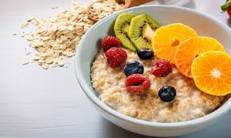

Ingredientes:
- 1 taza de avena
- 2 tazas de leche o agua
- 1 cucharadita de miel o azúcar
- ½ cucharadita de canela en polvo
- 1 plátano en rodajas
- ½ taza de fresas en trozos
- ¼ taza de almendras picadas
- Semillas de chía para decorar
Preparación:
- Calienta la leche o el agua en una cacerola.
- Agrega la avena y cocina a fuego bajo durante 5 minutos, removiendo ocasionalmente.
- Incorpora la miel y la canela.
- Sirve en un tazón y agrega las frutas y almendras.
- Decora con semillas de chía y disfruta tu desayuno saludable. 🥣